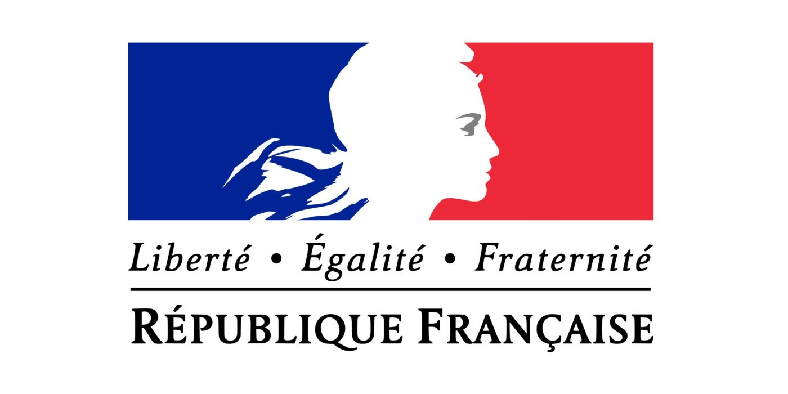
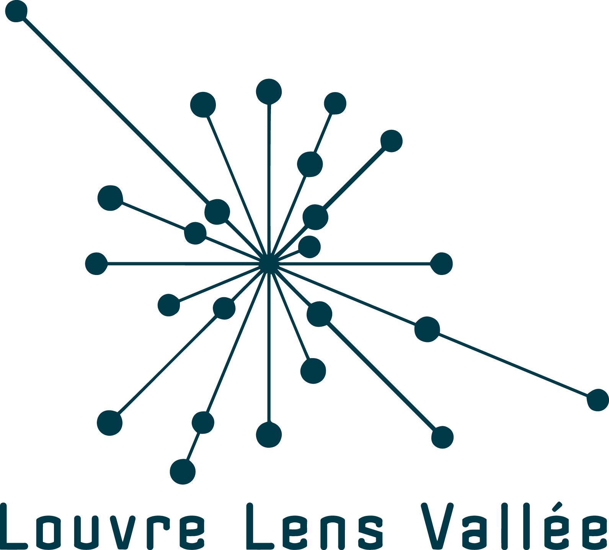
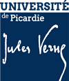
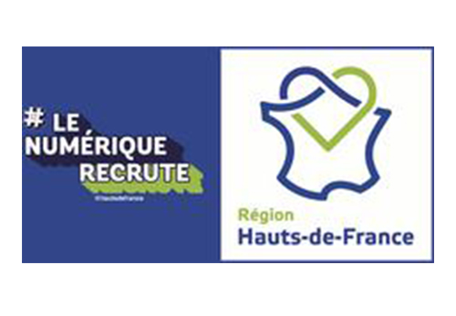

Un évènement régional annuel destiné à
sensibiliser les collégiennes et les lycéennes aux métiers
du numérique.
L’évènement Numériqu’elles
⬤
◯
◯
Les collégiennes et lycéennes testent, intéragissent et expérimentent le numérique !
Constats et objectifs
Dans les Hauts-de-France, 3 000 emplois numériques sont non pourvus chaque année et les femmes représentent seulement 33% des emplois du secteur et 18% des métiers informatiques. Ces métiers restent mal connus et stéréotypés : maths, urbain, geek... masculins.
Pour répondre à cet enjeu le Corif organise Numériqu’Elles depuis 2015 sous la forme d'ateliers dédiés aux collégiennes et lycéennes, pour faire découvrir les formations et métiers du numérique.
-
Au programme
- - Temps collectif (ouverture, table ronde)
- - Rotations d'ateliers de 30 minutes sur une demie-journée maximum par petits groupes;
- - Animés par des organismes de formations et des entreprises;
- - Pour faire découvrir des métiers à travers des expérimentations et des rencontres.
2173
filles déjà sensibilisées
984
filles inscrites en 2020
+ d’égalité femmes/hommes
En démultipliant Numériqu’Elles dans plusieurs sites des Hauts-de-France et d'autres régions, les actrices et acteurs publics et privé.es s'engagent durablement dans la féminisation des métiers du numérique et en faveur de l'égalité femmes/hommes.
Numériqu’Elles: la genèse

Dans le cadre, d’un projet de recherche InserNum, le Corif grâce aux financements de la Région et Etat a proposé en 2015 de mettre en place avec IBM une première Edition Numériqu’ELLES en 2015.
Soutenu par l’ETAT DRDFE, la Région HDF, le Départements Numériqu’ELLES se démultiplient sur les HDF.
Quelles opportunités ?
⬤
⬤
◯
Opportunités
- - Rencontrer et dialoguer avec des professionnel.les;
- - Découvrir des entreprises du numérique ou des services informatiques de grandes entreprises;
- - Expérimenter des outils numériques;
- - Se préparer et trouver un stage; devenir ambassadrice.
Évènements et Organisation
Édition 2020
lille - 6/11
soissons - 13/11
maubeuge - 17/11
beauvais - 20/11
boulogne-sur-mer - 24/11
amiens - 4/12
lens - 11/12
Les rectorats invitent les établissements à faire venir des collégiennes et lycéennes pendant une journée banalisées
Les organismes de formations et entreprises proposent des stands attractifs et des animations ludiques
Les acteurs locaux se mobilisent sur l'oragnisation de l'évènement
Les filles sensibilisées deviennent ambassadrices dans leurs établissements
Nos partenaires
⬤
⬤
⬤





